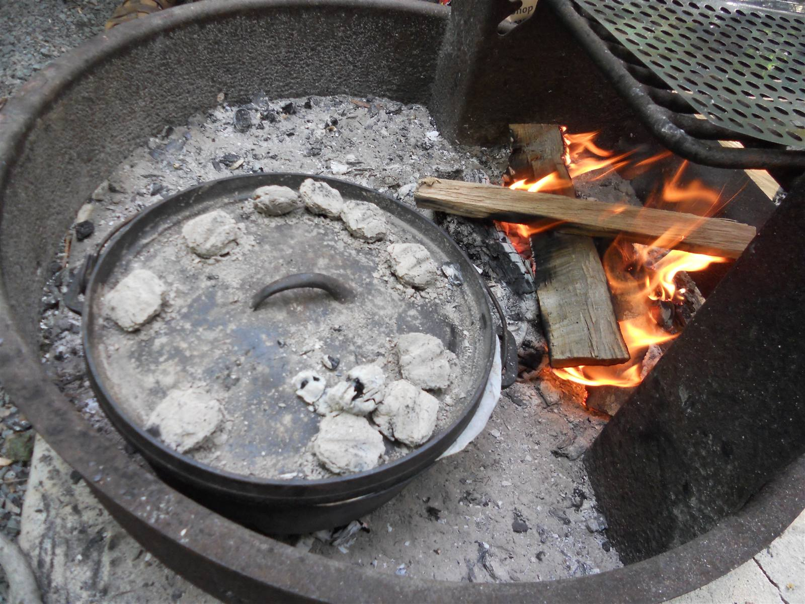

Troop 32 Acton Menu Book
A browsable library of pre-planned camp meals — 51 recipes across front-country (car camping) and backpacking. Pick a meal, copy the ingredient list onto a shopping list, and go. See the Full Guide for how the whole system works, or the Front-Country Index and Backpacking Index for the plain browsable tables.
Working on a rank or merit badge requirement? Start with a worksheet instead of a recipe page — they walk you through the same food-group and nutrition reasoning yourself, rather than reading it off a page:
- Second Class — requirement 2e
- First Class — requirement 2a
- Cooking merit badge — requirement 4 (home cooking)
- Cooking merit badge — requirement 5 (camp cooking)
- Cooking merit badge — requirement 6 (trail cooking)